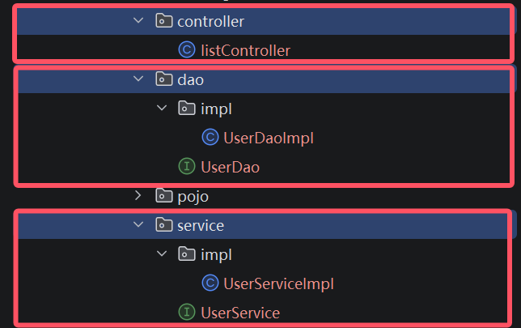

[SpringBoot]三层框架的分层解耦
三层框架
介绍
在开发中，尽可能让每一个接口，方法，类的职责分工明确，提高可读性，扩展性；利于后期维护。
这种原则叫做单一职责原则：
一个类或一个方法，就只做一件事情，只管一块功能。
对于一个业务，可以拆分成三层：
- Controller：控制层。接收前端发送的请求，对请求进行处理，并响应数据。
- Service：业务逻辑层。处理具体的业务逻辑。
- Dao：数据访问层(Data Access Object)，也称为持久层。负责数据访问操作，包括数据的增、删、改、查。
执行流程为：
- 前端发起请求
- Controller层接收请求
- Controller层调用Service进行逻辑处理
- Service去调用Dao获取所需数据
- Dao层从网路上或者数据库中拿到数据并返回Service
- Service对待处理数据进行逻辑处理并返回Controller
- Controller把最终结果响应给前端
- 前端收到响应
针对于这三层 一般会创建第三个包方便管理
controllerservicedao
对于每个包内一般采用面向接口的方式进行代码书写:
在每一层的包下书写接口类，再定义一个impl包用于书写该接口的实现类
实现类的命名规则为接口名Impl；示例如下：

分层解耦
分析问题
对于当前业务逻辑：当前端请求地址/list时，后端需要从项目文件下的src/main/resources/user.txt文件进行读取数据
文件格式如下：
1,daqiao,1234567890,大乔,22,2024-07-15 15:05:45
2,xiaoqiao,1234567890,小乔,18,2024-07-15 15:12:09
3,diaochan,1234567890,貂蝉,21,2024-07-15 15:07:16
4,lvbu,1234567890,吕布,28,2024-07-16 10:05:15
5,zhaoyun,1234567890,赵云,27,2024-07-16 11:03:28
6,zhangfei,1234567890,张飞,31,2024-07-16 11:03:28
7,guanyu,1234567890,关羽,34,2024-07-16 12:05:12
8,liubei,1234567890,刘备,37,2024-07-16 15:03:28
读取到数据后进行拆分并封装成已经定义好的类User：
package io.duckling.pojo;
import lombok.AllArgsConstructor;
import lombok.Data;
import lombok.NoArgsConstructor;
import java.time.LocalDateTime;
@Data //自动生成 get 和 set 方法
@NoArgsConstructor //无参构造
@AllArgsConstructor //有参构造
public class User {
private Integer id;
private String username;
private String password;
private String name;
private Integer age;
private LocalDateTime updateTime;
}
封装好后，合成一个List集合进行返回。
所以Controller层这么写：
@RestController
public class UserController {
private UserService userService = new UserServiceImpl();
@RequestMapping("/list")
public List<User> list(){
//1.调用Service
List<User> userList = userService.findAll();
//2.响应数据
return userList;
}
}
Service层中的UserSerivce接口：
public interface UserService {
//返回将数据转换成 User 类的数组
public List<User> findAll();
}
Service层中的UserServiceImpl实现类：
public class UserServiceImpl implements UserService {
private UserDao userDao = new UserDaoImpl();
@Override
public List<User> findAll() {
List<String> lines = userDao.findAll();
List<User> userList = lines.stream().map(line -> {
String[] parts = line.split(",");
Integer id = Integer.parseInt(parts[0]);
String username = parts[1];
String password = parts[2];
String name = parts[3];
Integer age = Integer.parseInt(parts[4]);
LocalDateTime updateTime = LocalDateTime.parse(parts[5], DateTimeFormatter.ofPattern("yyyy-MM-dd HH:mm:ss"));
return new User(id, username, password, name, age, updateTime);
}).collect(Collectors.toList());
return userList;
}
}
Dao层中的UserDao接口：
public interface UserDao {
public List<String> findAll();
}
Dao层中的UserDaoImpl实现类：
public class UserDaoImpl implements UserDao {
@Override
public List<String> findAll() {
InputStream in = this.getClass().getClassLoader().getResourceAsStream("user.txt");
ArrayList<String> lines = IoUtil.readLines(in, StandardCharsets.UTF_8, new ArrayList<>());
return lines;
}
}
我们发现 每一层调用其它层的实现类时需要去构建这个实现类对象，比如在Controller层中new了UserServiceImpl()
如果说我们需要更换实现类，比如由于业务的变更，UserServiceImpl 不能满足现有的业务需求，我们需要切换为 UserServiceImpl2 这套实现，就需要修改Contorller的代码，需要创建 UserServiceImpl2 的实现new UserServiceImpl2() 。
Service中调用Dao，也是类似的问题。
这种情况称之为层与层之间 耦合 了。
耦合和内聚的概念：
- 内聚：软件中各个功能模块内部的功能联系。
- 耦合：衡量软件中各个层/模块之间的依赖、关联的程度。
软件设计原则：高内聚低耦合。
高内聚：指的是一个模块中各个元素之间的联系的紧密程度，如果各个元素(语句、程序段)之间的联系程度越高，则内聚性越高，即 "高内聚"。
低耦合：指的是软件中各个层、模块之间的依赖关联程序越低越好。
优化
我们要对现在这种情况进行解耦。
我们不再new一个实现类对象，取而代之的是
- 提供一个容器，容器中存储一些对象(例：UserService对象)
- Controller程序从容器中获取UserService类型的对象
核心概念
需要用到SpringBoot中的两个核心概念：
- 控制反转： Inversion Of Control，简称IOC。对象的创建控制权由程序自身转移到外部（容器），这种思想称为控制反转。
- 对象的创建权由程序员主动创建转移到容器(由容器创建、管理对象)。这个容器称为：IOC容器或Spring容器。
- 依赖注入：= Dependency Injection，简称DI。容器为应用程序提供运行时，所依赖的资源，称之为依赖注入。
- 程序运行时需要某个资源，此时容器就为其提供这个资源。
-
例：EmpController程序运行时需要EmpService对象，Spring容器就为其提供并注入EmpService对象。
-
bean对象：IOC容器中创建、管理的对象，称之为：bean对象。
IOC && DI
初步演示
1). 将Service及Dao层的实现类，交给IOC容器管理
在实现类加上 @Component 注解，就代表把当前类产生的对象交给IOC容器管理。
@Component
public class UserDaoImpl implements UserDao {
@Override
public List<String> findAll() {
InputStream in = this.getClass().getClassLoader().getResourceAsStream("user.txt");
ArrayList<String> lines = IoUtil.readLines(in, StandardCharsets.UTF_8, new ArrayList<>());
return lines;
}
}
@Component
public class UserServiceImpl implements UserService {
private UserDao userDao;
@Override
public List<User> findAll() {
List<String> lines = userDao.findAll();
List<User> userList = lines.stream().map(line -> {
String[] parts = line.split(",");
Integer id = Integer.parseInt(parts[0]);
String username = parts[1];
String password = parts[2];
String name = parts[3];
Integer age = Integer.parseInt(parts[4]);
LocalDateTime updateTime = LocalDateTime.parse(parts[5], DateTimeFormatter.ofPattern("yyyy-MM-dd HH:mm:ss"));
return new User(id, username, password, name, age, updateTime);
}).collect(Collectors.toList());
return userList;
}
}
2). 为Controller 及 Service注入运行时所依赖的对象
@Component
public class UserServiceImpl implements UserService {
@Autowired
private UserDao userDao;
@Override
public List<User> findAll() {
List<String> lines = userDao.findAll();
List<User> userList = lines.stream().map(line -> {
String[] parts = line.split(",");
Integer id = Integer.parseInt(parts[0]);
String username = parts[1];
String password = parts[2];
String name = parts[3];
Integer age = Integer.parseInt(parts[4]);
LocalDateTime updateTime = LocalDateTime.parse(parts[5], DateTimeFormatter.ofPattern("yyyy-MM-dd HH:mm:ss"));
return new User(id, username, password, name, age, updateTime);
}).collect(Collectors.toList());
return userList;
}
}
@RestController
public class UserController {
@Autowired
private UserService userService;
@RequestMapping("/list")
public List<User> list(){
//1.调用Service
List<User> userList = userService.findAll();
//2.响应数据
return userList;
}
}
这只是初步对IOC和DI进行了演示，下面进行详细介绍：
IOC详解
前面我们提到IOC控制反转，就是将对象的控制权交给Spring的IOC容器，由IOC容器创建及管理对象。IOC容器创建的对象称为bean对象。
Spring框架提供了四种不同的@Component的衍生注解：
| 注解 | 说明 | 位置 |
|---|---|---|
| @Component | 声明bean的基础注解 | 不属于以下三类时，用此注解 |
| @Controller | @Component的衍生注解 | 标注在控制层类上 |
| @Service | @Component的衍生注解 | 标注在业务层类上 |
| @Repository | @Component的衍生注解 | 标注在数据访问层类上（由于与mybatis整合，用的少） |
那么此时，我们就可以使用 @Service 注解声明Service层的bean。 使用 @Repository 注解声明Dao层的bean。 代码实现如下：
Service层:
@Service
public class UserServiceImpl implements UserService {
private UserDao userDao;
@Override
public List<User> findAll() {
List<String> lines = userDao.findAll();
List<User> userList = lines.stream().map(line -> {
String[] parts = line.split(",");
Integer id = Integer.parseInt(parts[0]);
String username = parts[1];
String password = parts[2];
String name = parts[3];
Integer age = Integer.parseInt(parts[4]);
LocalDateTime updateTime = LocalDateTime.parse(parts[5], DateTimeFormatter.ofPattern("yyyy-MM-dd HH:mm:ss"));
return new User(id, username, password, name, age, updateTime);
}).collect(Collectors.toList());
return userList;
}
}
Dao层:
@Repository
public class UserDaoImpl implements UserDao {
@Override
public List<String> findAll() {
InputStream in = this.getClass().getClassLoader().getResourceAsStream("user.txt");
ArrayList<String> lines = IoUtil.readLines(in, StandardCharsets.UTF_8, new ArrayList<>());
return lines;
}
}
注意事项
注意1：声明bean的时候，可以通过注解的value属性指定bean的名字，如果没有指定，默认为类名首字母小写。
注意2：使用以上四个注解都可以声明bean，但是在springboot集成web开发中，声明控制器bean只能用@Controller。
组件扫描
- 前面声明bean的四大注解，要想生效，还需要被组件扫描注解
@ComponentScan扫描。 - 该注解虽然没有显式配置，但是实际上已经包含在了启动类声明注解
@SpringBootApplication中，默认扫描的范围是启动类所在包及其子包。
所以，我们在项目开发中，只需要按照如上项目结构，将项目中的所有的业务类，都放在启动类所在包的子包中，就无需考虑组件扫描问题。
DI详解
依赖注入，是指IOC容器要为应用程序去提供运行时所依赖的资源，而资源指的就是对象。
在入门程序案例中，我们使用了@Autowired这个注解，完成了依赖注入的操作，而这个Autowired翻译过来叫：自动装配。
@Autowired注解，默认是按照类型进行自动装配的（去IOC容器中找某个类型的对象，然后完成注入操作）
@Autowired三种用法
1). 属性注入
@RestController
public class UserController {
//方式一: 属性注入
@Autowired
private UserService userService;
}
- 优点：代码简洁、方便快速开发。
- 缺点：隐藏了类之间的依赖关系、可能会破坏类的封装性。
2). 构造函数注入
@RestController
public class UserController {
//方式二: 构造器注入
private final UserService userService;
@Autowired //如果当前类中只存在一个构造函数, @Autowired可以省略
public UserController(UserService userService) {
this.userService = userService;
}
}
- 优点：能清晰地看到类的依赖关系、提高了代码的安全性。
- 缺点：代码繁琐、如果构造参数过多，可能会导致构造函数臃肿。
- 注意：如果只有一个构造函数，@Autowired注解可以省略。（通常来说，也只有一个构造函数）
3). setter注入
/**
* 用户信息Controller
*/
@RestController
public class UserController {
//方式三: setter注入
private UserService userService;
@Autowired
public void setUserService(UserService userService) {
this.userService = userService;
}
}
- 优点：保持了类的封装性，依赖关系更清晰。
- 缺点：需要额外编写setter方法，增加了代码量。
在项目开发中，基于@Autowired进行依赖注入时，基本都是第一种和第二种方式。（官方推荐第二种方式，因为会更加规范）但是在企业项目开发中，很多的项目中，也会选择第一种方式因为更加简洁、高效（在规范性方面进行了妥协）。
IOC容器中存在多个同类型bean对象的情况
那如果在IOC容器中，存在多个相同类型的bean对象，会出现什么情况呢？
比如对于Service层中的UserService有两个实现类UserServiceImpl和UserServiceImpl2
那就会报错，因为在Spring的容器中，UserService这个类型的bean存在两个，框架不知道具体要注入哪个bean使用，所以就报错了。
Spring提供了以下几种解决方案：
- @Primary
- @Qualifier
- @Resource
方案一：使用@Primary注解
当存在多个相同类型的Bean注入时，加上@Primary注解，来确定默认的实现。
@Primary
@Service
public class UserServiceImpl implements UserService {
}
方案二：使用@Qualifier注解
指定当前要注入的bean对象。 在@Qualifier的value属性中，指定注入的bean的名称。 @Qualifier注解不能单独使用，必须配合@Autowired使用。
@RestController
public class UserController {
@Qualifier("userServiceImpl")
@Autowired
private UserService userService;
方案三：使用@Resource注解
是按照bean的名称进行注入。通过name属性指定要注入的bean的名称。
@RestController
public class UserController {
@Resource(name = "userServiceImpl")
private UserService userService;
面试题：@Autowird 与 @Resource的区别
- @Autowired 是spring框架提供的注解，而@Resource是JDK提供的注解
- @Autowired 默认是按照类型注入，而@Resource是按照名称注入
注：@Qualifier和@Resource中填写的名称是bean的名称 当在创建bean对象的时候若没有指定名字，则默认名为该bean的类名，类名首字母小写
如：UserServiceImpl的bean名称为userServiceImpl
*关于bean名称相关请看注1
← Home